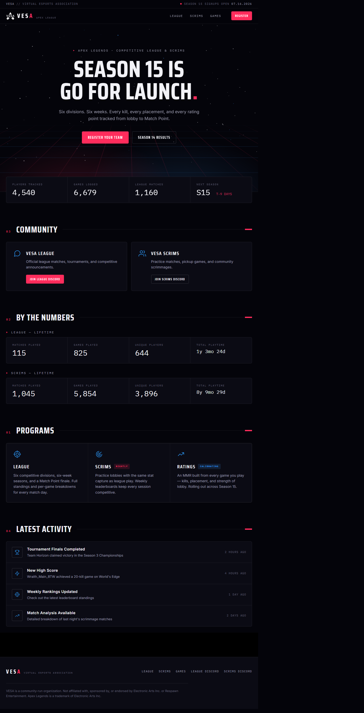
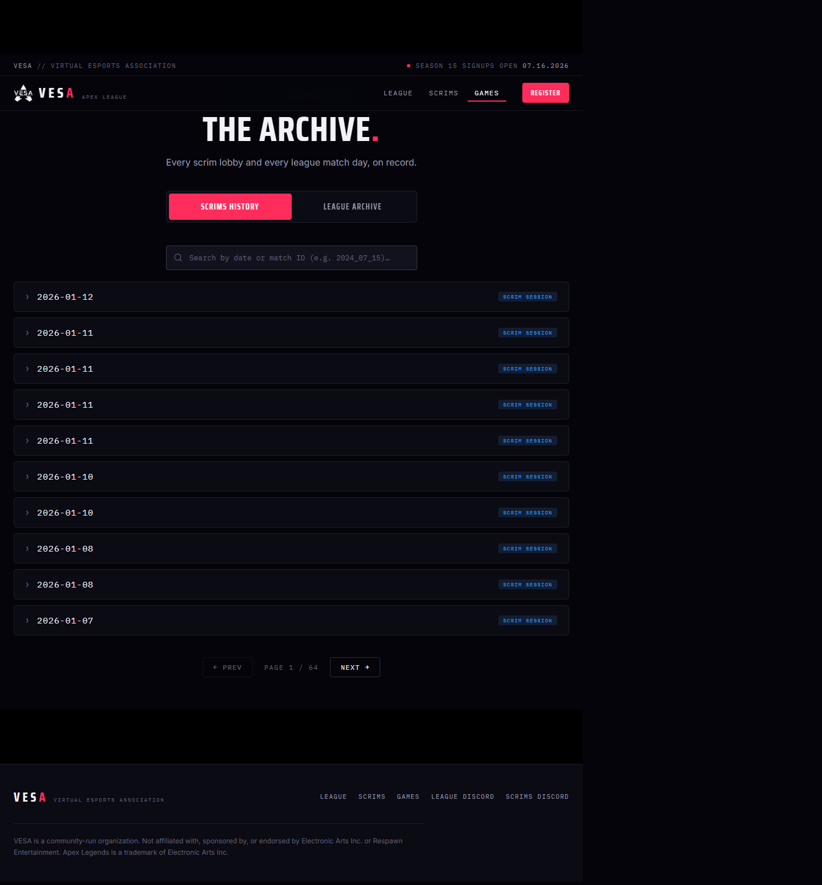
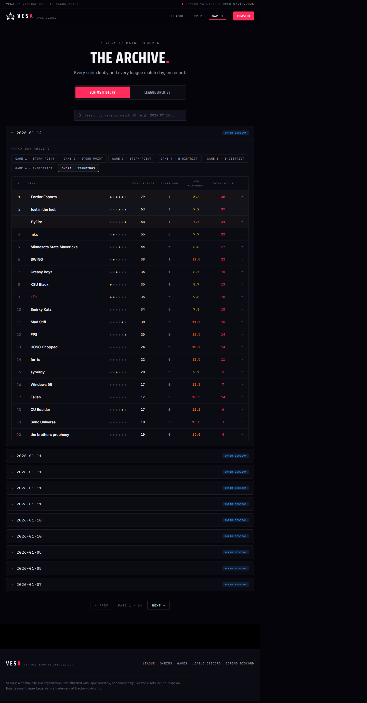
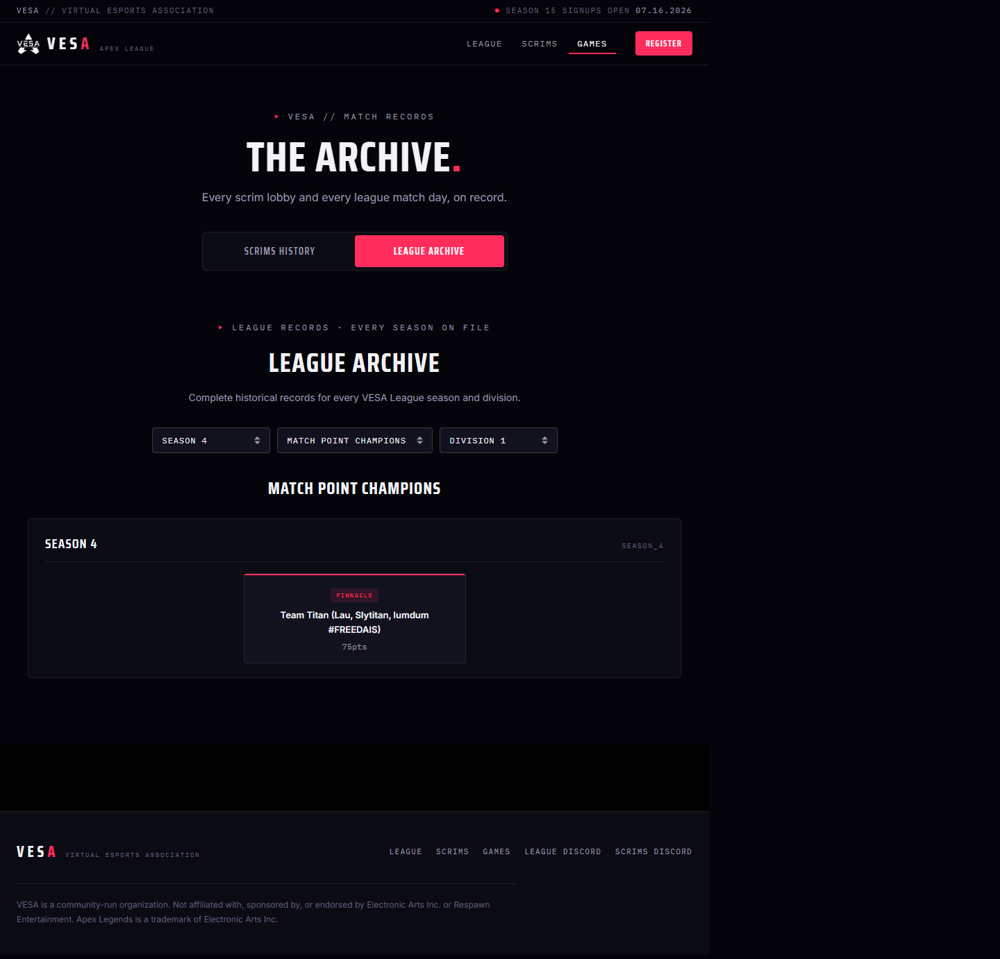
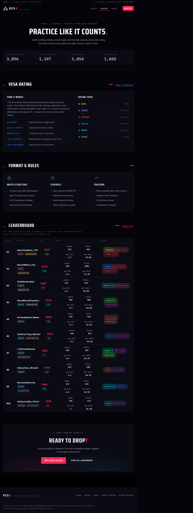
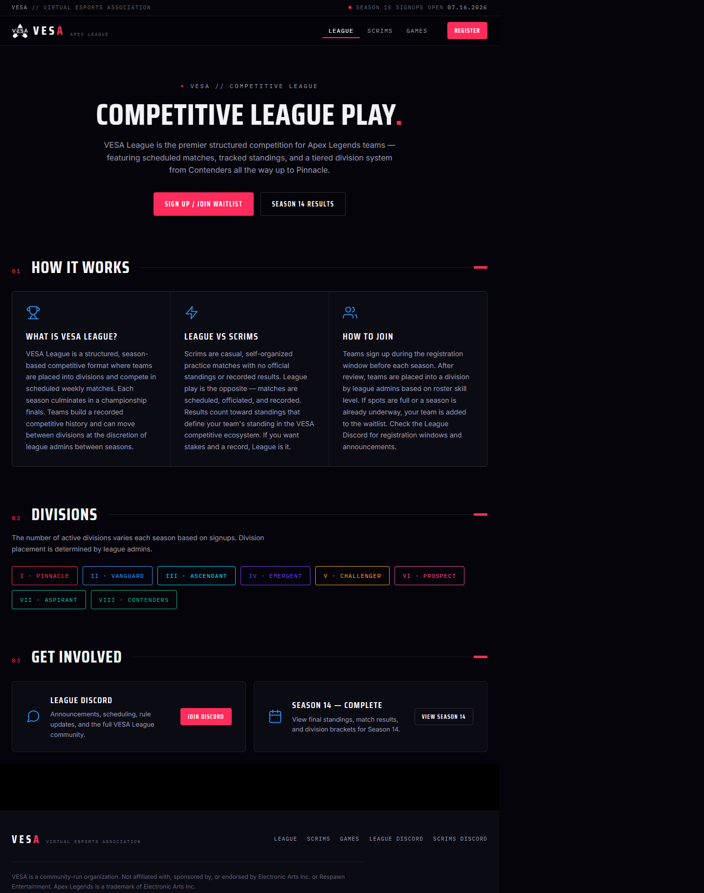
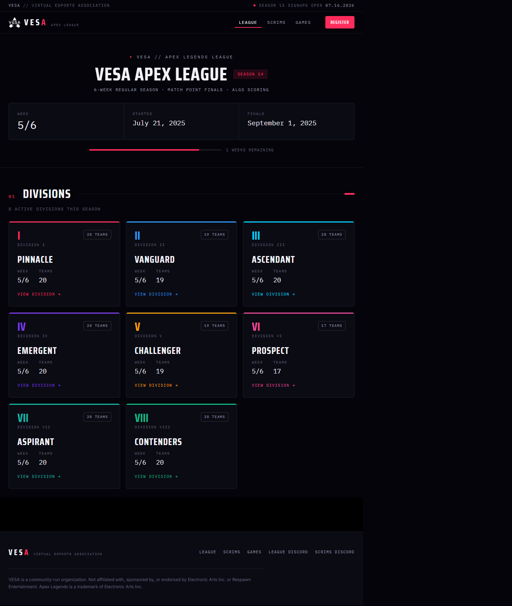
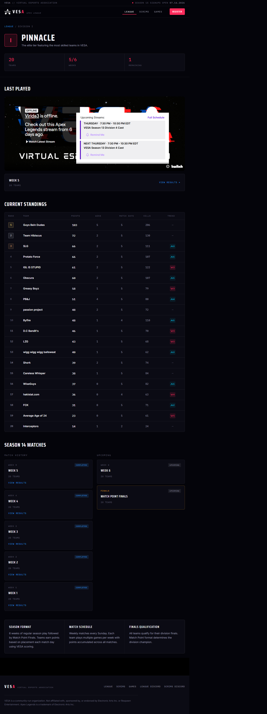
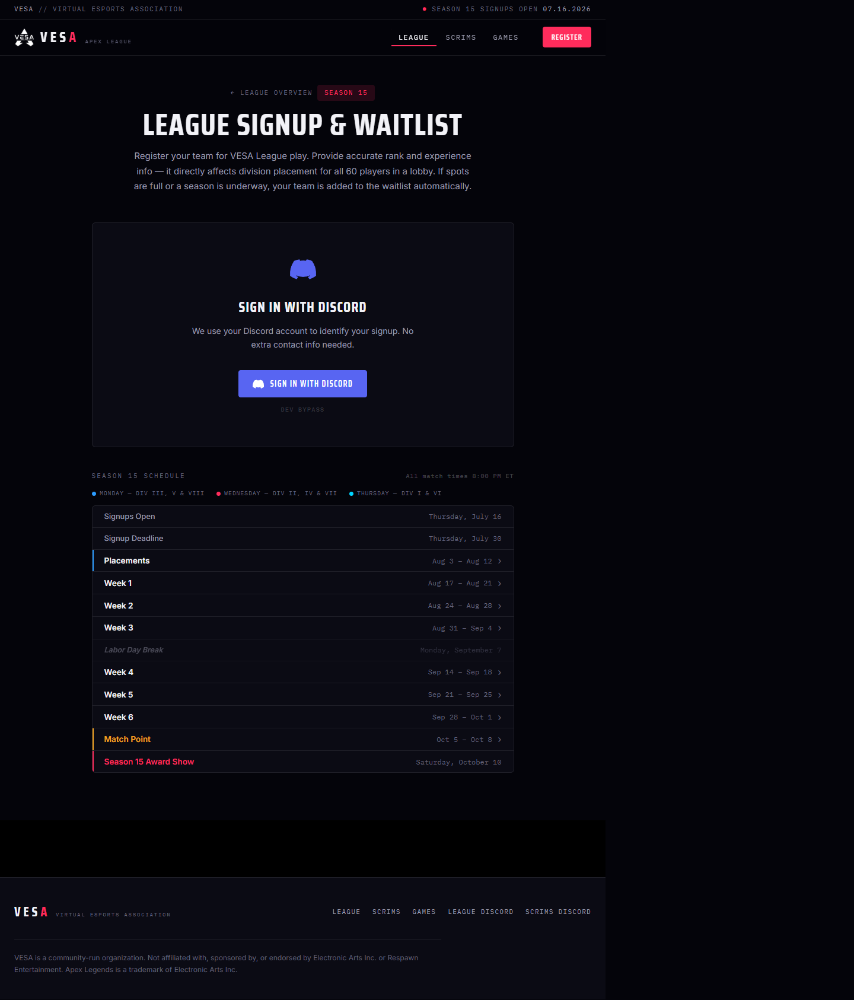

Full-page captures of the VESAWeb Mission Control UI — captured 2026-07-07 at 1440×900. All pages use the local dev server (localhost:4200).
Landing page. Stats strip, hero section, recent activity feed, features showcase, Discord CTA. Stats are currently hardcoded — live data wiring tracked in #34.

Default view. Full file index loaded on first visit, sorted newest-first. Client-side pagination (10/page, 64 pages total). Search filters full in-memory index.

Expanding a scrim row reveals the match day table: game tabs, per-game placement results, overall standings with podium stripes, and collapsible player stats.

Segmented control switches to the league archive view: season/division filter dropdowns, Match Point Champions, Season Standings, and Match History views.

Scrims hub page. Hero, join info, scrim format breakdown, ELO system explainer, leaderboard section. ELO leaderboard data strategy is an open decision (#37).

League hub. Explains the format, shows the 8-division grid with links, Discord and results CTAs.

Season 14 results. Dynamically loads all 8 divisions from HuggingFace. Each division card shows team count, current week, and links to the division detail page.

Division page. Standings table, per-week match history cards, live/last-played match section with Twitch embed. Match cards link to /match/:id results.

Season 15 registration form. Discord OAuth gate (sign-in required before form is shown). Season 15 schedule widget below the form. Submission wired to Discord webhook once #11 is complete.

/match/:id (match results detail page) — the Angular dev server returns a 404 for routes ending in .json because webpack-dev-server's historyApiFallback skips routes that look like files. The route works correctly when navigating from within the app via Angular router. Fix: add disableDotRule: true to historyApiFallback in the Angular dev server config, or serve the page from a navigated link. Also not captured: /players and /ratings (feature-flagged off).